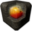
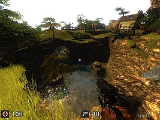
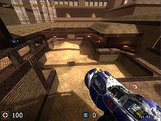
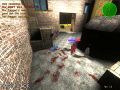

Sauerbraten
Dieser Artikel wurde für die folgenden Ubuntu-Versionen getestet:
Ubuntu 14.04 Trusty Tahr
Zum Verständnis dieses Artikels sind folgende Seiten hilfreich:

Sauerbraten  ist ein Open-Source-FPS (First Person Shooter), der auf der Cube2-Engine basiert. Das Spiel bietet einen Einzelspieler-Modus, in dem man Wettkämpfe gegen Computergegner (sog. Botmatches) und ein paar Missionen spielen kann, aber der Schwerpunkt liegt auf dem Mehrspieler-Modus. Tesseract basiert ebenfalls auf der Open-Source-Engine.
ist ein Open-Source-FPS (First Person Shooter), der auf der Cube2-Engine basiert. Das Spiel bietet einen Einzelspieler-Modus, in dem man Wettkämpfe gegen Computergegner (sog. Botmatches) und ein paar Missionen spielen kann, aber der Schwerpunkt liegt auf dem Mehrspieler-Modus. Tesseract basiert ebenfalls auf der Open-Source-Engine.
Das Besondere an Sauerbraten ist, dass alles Clientseitig abläuft und so der Server nicht für jede Aktion um Erlaubnis gefragt werden muss, sondern auch autonom handeln kann. Hierdurch lässt sich das Spiel auch mit einem höheren Ping angenehm spielen. Neben Sauerbraten stellen bspw. Nexuiz und Warsow weitere beliebte Open-Source-Shooter dar
|  |  |
| Spieleszene | Spieleszene |
Installation¶
Aus einer Paketquelle¶
Zur Installation [1] ist folgendes Paket aus den Quellen notwendig:
sauerbraten (multiverse)
 mit apturl
mit apturl
Paketliste zum Kopieren:
sudo apt-get install sauerbraten
sudo aptitude install sauerbraten
Nach erfolgreicher Installation kann man Sauerbraten über "Anwendungen -> Spiele -> Sauerbraten" starten.
Manuell¶
Eventuell enthält die Ubuntu Paketquelle nicht die neuste Version des Spiels. In diesem Fall kann man Sauerbraten manuell installieren. Vor der Installation muss das folgende Paket installiert werden:
libsdl-mixer1.2 (universe)
mit apturl
Paketliste zum Kopieren:
sudo apt-get install libsdl-mixer1.2
sudo aptitude install libsdl-mixer1.2
Anschließend lädt man sich die aktuelle Spieldatei von der Herstellerseite  herunter und entpackt [2] diese in einen beliebigen Ordner (bspw. /opt). Danach wechselt man in das vorher erstellte Verzeichnis und kann das Spiel über die Datei ./sauerbraten_unix starten [3]. Bei Bedarf kann man einen Eintrag im Startmenü erstellen [4]. Ein passendes Icon findet man im Spielverzeichnis im Ordner data/cube.png.
herunter und entpackt [2] diese in einen beliebigen Ordner (bspw. /opt). Danach wechselt man in das vorher erstellte Verzeichnis und kann das Spiel über die Datei ./sauerbraten_unix starten [3]. Bei Bedarf kann man einen Eintrag im Startmenü erstellen [4]. Ein passendes Icon findet man im Spielverzeichnis im Ordner data/cube.png.
|  |
| Spielszene |
Spielmodi¶
Einzelspieler¶
"SP" (Single Player): In diesem Modus kämpft man sich durch eine mit Gegnern und Gegenständen (Waffen, Munition, etc.) bestückte Karte. Des Weiteren gibt es auf den meisten Karten Respawnpoints, die bei Berührung aktiviert werden und Schalter zum Öffnen von Türen. Die Gegner greifen in diesem Modus an, wenn sie den Spieler sehen. Gemessen wird die Zeit, die zum Beenden der Karte benötigt wurde. Den Rekord gilt es in diesem Modus zu unterbieten.
"DMSP" (Death Match Single Player): Hier wird der Spieler auf einer Deathmatch-Karte ausgesetzt und wenige Sekunden später erscheint eine Horde von Gegnern, die es zu besiegen gilt. Auch beim DMSP kommt es auf die Zeit an.
"Slowmo SP": Identisch mit SP, bis auf die Besonderheit, dass, wenn der Spieler Lebensenergie verliert, ein Slowmotion-(Zeitlupen-)Effekt auftritt. Je weniger Energie vorhanden ist, desto stärker ist der Effekt. Außerdem lädt sich die Lebensenergie langsam von selbst auf.
"Slowmo DMSP": Das gleich Prinzip wie Slowmo SP, umgelegt auf DMSP.
Mehrspieler¶
In Sauerbraten sind alle gängigen Ego-Shooter Mehrspieler-Modi vorhanden. Die wichtigsten sind:
"FFA" (Free for All): Deathmatch mit Gegenständen
"Coop Edit": Gemeinsames Bearbeiten in Echtzeit
"Instagib": Deathmatch mit einer Waffe (Gewehr), unendlicher Munition und einem Lebenspunkt, sodass jeder Treffer zählt. In diesem Modus haben alle Spieler von Anfang an die gleichen Chancen, da keine Gegenstände vorhanden sind.
"Instagib Team": Wie Instagib im Teammodus.
Konfiguration¶
Kommandos¶
In Sauerbraten gibt es die Option Kommandos auszuführen. Der Umfang der Möglichkeiten reicht vom Verbinden und Trennen mit Gameservern über die Verwaltung von Servern, als auch von lokalen Games bis hin zum Wechsel der Waffen. Um ein Kommando auszuführen drückt man
T , was normalerweise der allgemeine Chat ist, aber um Befehle einzugeben, stellt man einfach ein "/" vor die Eingabe. Eine komplette Kommandoreferenz findet man in der Dokumentation .
Videoaufnahme¶
Über ein einfaches Kommando ist es möglich, das Spielgeschehen aus Sicht des Spielers aufnehmen. Die Videos werden standardmäßig im Ordner Homeverzeichnis ~/.sauerbraten unkomprimiert und mit einer Auflösung von 320 mal 240 im AVI-Format gespeichert. Daher werden die Dateien sehr schnell sehr groß. Bei einer kurzen Aufnahme wird das Video mit dem angegebenen Dateinamen gespeichert. Erreicht die Aufnahme eine Größe von einem Gigabyte, wird sie unter "Dateiname000.avi" gespeichert und eine neue Datei erstellt, wobei die Nummerierungssequenz von 000 bis 999 geht.
| Videooptionen | |
| Befehl | Funktion |
movie Dateiname | Erstellt ein unkomprimiertes Video (320 x 240, AVI-Format) |
moview W | Die Breite des Videos auf W Pixel angepasst (0 ist die aktuelle Fensterbreite). |
movieh H | Die Höhe der Aufnahme auf H Pixel verändert (0 ist hier die Höhe des aktuellen Fensters). |
moviesound 0/1 | Hiermit lässt sich einstellen, ob auch der Sound aufgenommen werden soll, wobei 1 für die Aktivierung und 0 für die Deaktivierung auszuwählen ist. |
moviefps F | Die Framerate wird auf F FPS verändert (Standart ist 24). Mit mehr FPS (Frames per second) wirkt das Video flüssiger, aber wird auch größer. |
Tastenbelegungen¶
| Tastenbelegungen | |
| Taste | Aktion |
| W , A , S , D | Bewegen (vorwärts, links, rückwärts, rechts) |
 | Waffe wechseln |
oder  | Springen |
 | Schießen |
| G | Zoomen |
| F12 | Screenshot (wird in ~/.sauerbraten gespeichert) |
| T | Allgemeiner Chat |
| Y | Teamchat |
| E | Map editieren (Nur im Einzelspieler-Modus, sowie auf Server im Coopedit-Modus verfügbar) |

Infobox¶
| Sauerbraten | |
| Genre: | Egoshooter |
| Sprache: | |
| Veröffentlichung: | 27. Februar 2004 |
| Publisher: | Wouter „Aardappel“ van Oortmerssen, Lee „Eihrul“ Salzman, u.a. |
| Systemvoraussetzungen: | siehe offizielle Systemvoraussetzungen |
| Medien: | Download |
| Läuft mit: | nativ |
| Mumble-Unterstüzung | nativ (libsdl1.2debian-all) |

- Erstellt mit Inyoka
-
 2004 – 2017 ubuntuusers.de • Einige Rechte vorbehalten
2004 – 2017 ubuntuusers.de • Einige Rechte vorbehalten
Lizenz • Kontakt • Datenschutz • Impressum • Serverstatus -
Serverhousing gespendet von